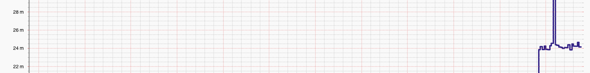

PingWatcher
a tool for monitoring

Install for Linux
# apt install rrdtool
# pip install pingchecker
# pip install pingchecker
Install for MacOS
# brew install rrdtool
# pip install pingchecker
# pip install pingchecker

Built in web-server lets you view graphs from whatever host you start on it.

The ability to send data directly to any statsd server, you can view your data in whatever interface you want.

Simple to use CLI, allows you to start monitoring devices quickly, no configuration files to figure out.
Start pingwatcher looking at google, and then start a web-server with the results on http://localhost:8090
# pingwatcher --host google:www.google.com
Send stats to a local statsd port. By default the stats are placed under the pingwatcher branch (this can be changed
with the --statsdPrefix flag)
# pingwatcher --host google:www.google.com --backend statsd --statsd localhost:8080
View the project on Github